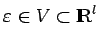
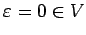
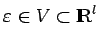
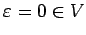

Inhalt Index DeskTop Bronstein

 Dynamische Systeme und Chaos Bifurkationstheorie, Wege zum Chaos
Dynamische Systeme und Chaos Bifurkationstheorie, Wege zum Chaos


Gegeben sei auf  ein von einer Differentialgleichung oder einer Abbildung erzeugtes dynamisches System , das zusätzlich von einem Parameter  abhängt. Jede Änderung der topologischen Struktur des Phasenporträts des dynamischen Systems bei kleiner Änderung des Parameters heißt Bifurkation. Der Parameter  heißt Bifurkationswert, wenn in jeder Umgebung von 0 Parameterwerte
ein von einer Differentialgleichung oder einer Abbildung erzeugtes dynamisches System , das zusätzlich von einem Parameter  abhängt. Jede Änderung der topologischen Struktur des Phasenporträts des dynamischen Systems bei kleiner Änderung des Parameters heißt Bifurkation. Der Parameter  heißt Bifurkationswert, wenn in jeder Umgebung von 0 Parameterwerte  existieren, so daß die dynamischen Systeme und auf M topologisch nicht äquivalent bzw. nicht konjugiert sind. Die kleinste Dimension eines Parameterraumes, bei der eine Bifurkation beobachtbar ist, heißt Kodimension der Bifurkation.
existieren, so daß die dynamischen Systeme und auf M topologisch nicht äquivalent bzw. nicht konjugiert sind. Die kleinste Dimension eines Parameterraumes, bei der eine Bifurkation beobachtbar ist, heißt Kodimension der Bifurkation.
Man unterscheidet lokale Bifurkationen, die nahe einzelner Orbits des dynamischen Systems ablaufen, und globale Bifurkationen, die sofort einen großen Teil des Phasenraumes betreffen.